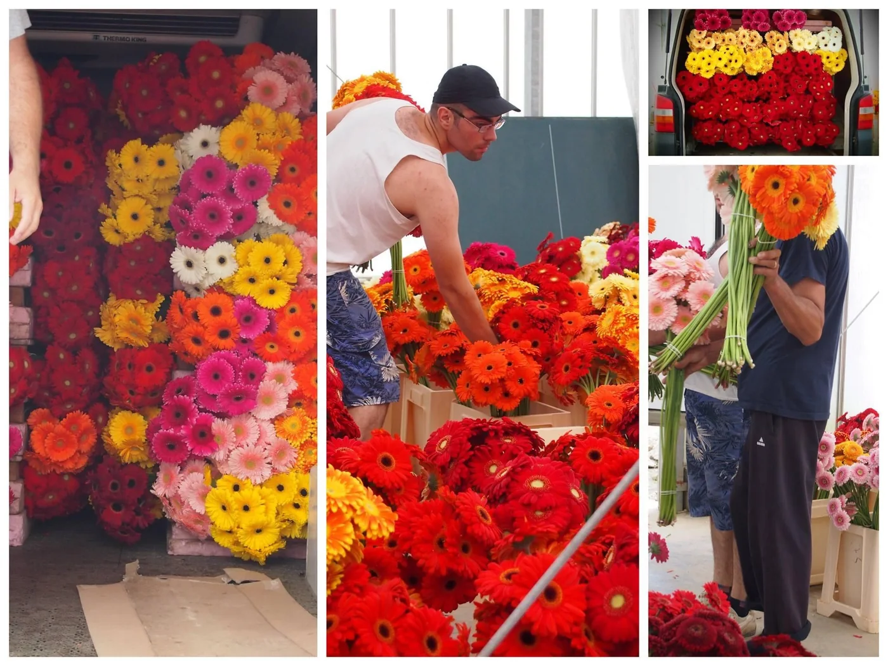

Suntem producători de flori proaspăt tăiate din anii ’90. Dragostea pentru acest domeniu a început cu producția de tuberoze — o floare pe care o producem în continuare, vara.
Producția de gerbera a început în 2008, cu o seră de 900 m². Extinderea a venit imediat, în 2009, cu încă 3.000 m². Au urmat alte două investiții, în 2013 și 2019, care au adus suprafața cultivată la 15.000 m² astăzi.
Lucrăm două generații la o producție de peste 50 de varietăți de gerbera: Standard, Mini, Fireworx, Pomponi și Pasta. În catalogul de pe acest site sunt trecute 89.
Producem cu tehnologie adusă din Olanda, ca să obținem aceeași calitate ca marile sere de gerbera — cu avantajul prospețimii. Marfa ajunge la florării și la partenerii en-gros în maximum 24 de ore de la recoltare.
Suprafața pentru extinderea din 2013 nu este publicată separat; totalul din 2019 o include.
